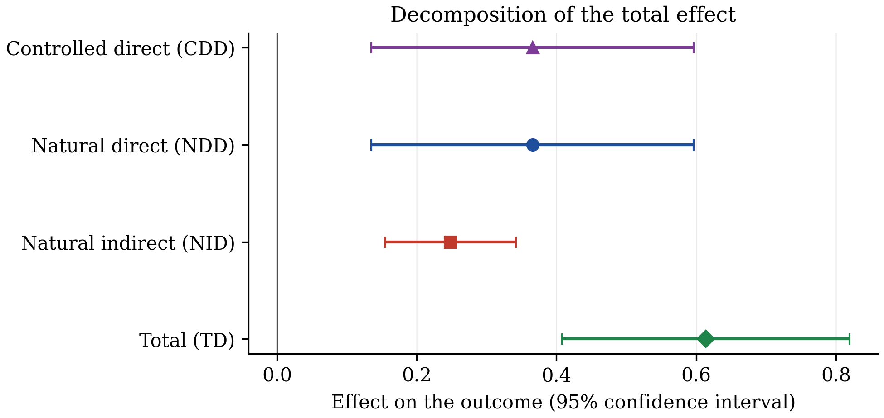
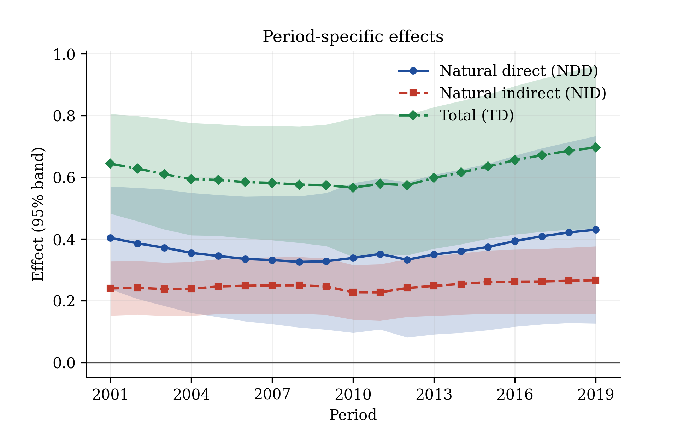
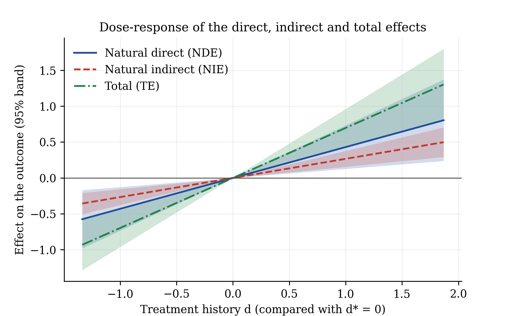
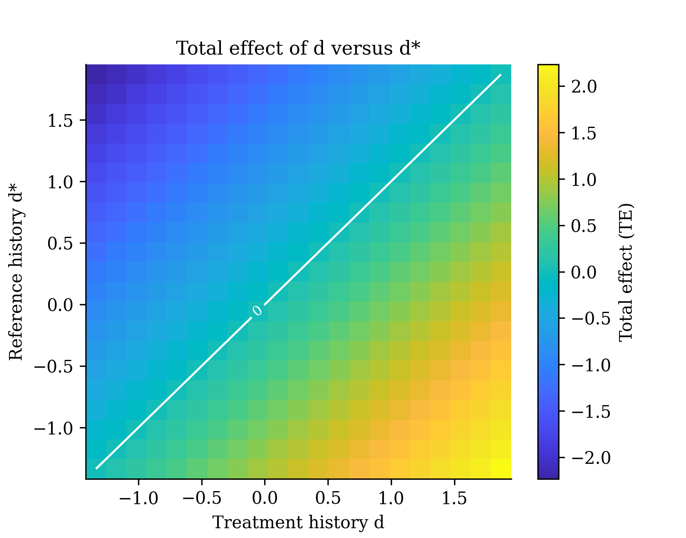
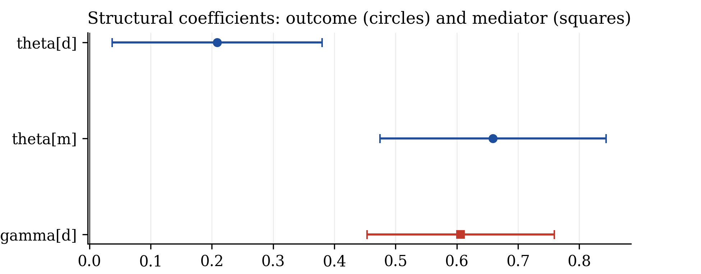
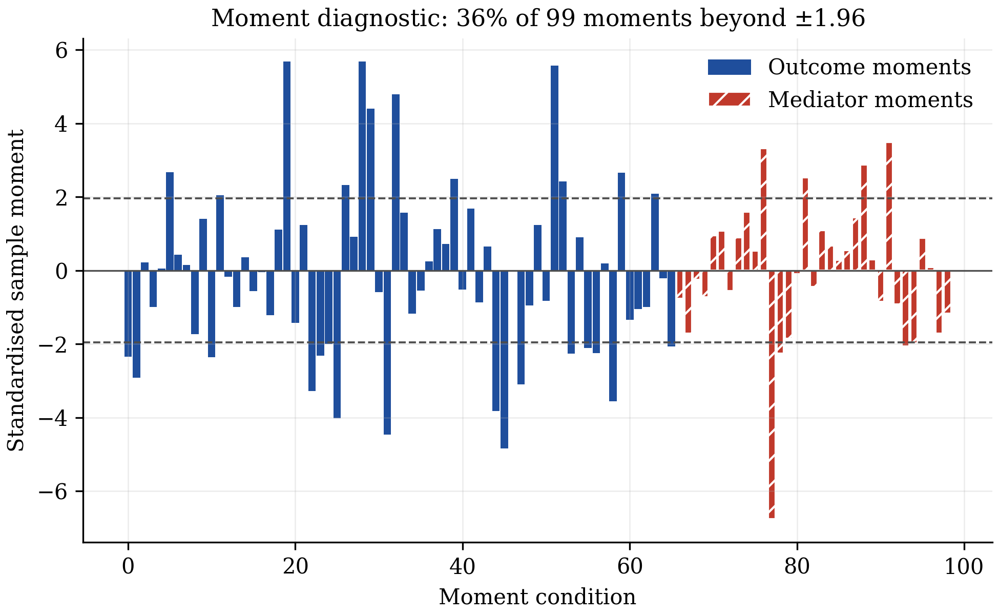

What it does
A treatment often changes an outcome through an intermediate variable. Employment raises local income partly because it raises wages. panelmed splits the total effect into the part that goes through the mediator and the part that does not, using repeated observations of the same units to remove any time-invariant confounder.
Estimator
DML-GMM for the outcome and mediator equations, with cross-fitting and an auxiliary fold that removes period effects.
Effects and inference
Controlled direct, natural direct, natural indirect and total effects, in levels and as derivatives, with analytical and bootstrap standard errors.
Tables and figures
Text, LaTeX, Markdown and HTML tables; decomposition, profile, dose-response, surface and diagnostic figures.
Data included
The U.S. county panel of the paper's application (3,058 counties, 2000–2019) and the paper's Monte Carlo generator.
Installation
pip install panelmedWith interactive 3-D surfaces:
pip install "panelmed[plotly]"Requirements: Python 3.10 or later, with numpy, scipy, pandas, matplotlib, scikit-learn and joblib (installed automatically).
Never used Python? Install Anaconda, open “Anaconda Prompt”, and type the command above. The README has a step-by-step guide from zero.
Theory
The model
For unit \(i = 1,\dots,N\) and period \(t = 1,\dots,T\), with outcome \(Y_{it}\), mediator \(M_{it}\), treatment \(D_{it}\) and covariates \(X_{it}\):
$$Y_{it} = \tau_Y(D_{i,t-L:t}, M_{i,t-L:t}, X_{i,t-L:t})'\theta_0 + f_0(X_{i,t-L:t}) + \alpha_i^Y + \lambda_t^Y + \varepsilon_{it}^Y$$ $$M_{it} = \tau_M(D_{i,t-L:t}, X_{i,t-L:t})'\gamma_0 + g_0(X_{i,t-L:t}) + \alpha_i^M + \lambda_t^M + \varepsilon_{it}^M$$\(\tau_Y\) and \(\tau_M\) are dictionaries chosen by the researcher (current and lagged treatment, squares, interactions). \(f_0\) and \(g_0\) are unknown, possibly nonlinear functions of the covariates. \(\alpha_i\) are unit effects and \(\lambda_t\) period effects. The treatment may be binary, multivalued or continuous; the mediator is continuous.
The effects
For two treatment histories \(\bar d_t\) and \(\bar d_t^{*}\), with \(\bar M_{it}(\cdot)\) the mediator history a unit would have under a given treatment history:
$$\mathrm{NDE}_t = E\big[Y_{it}(\bar d_t, \bar M_{it}(\bar d_t^{*})) - Y_{it}(\bar d_t^{*}, \bar M_{it}(\bar d_t^{*}))\big]$$ $$\mathrm{NIE}_t = E\big[Y_{it}(\bar d_t, \bar M_{it}(\bar d_t)) - Y_{it}(\bar d_t, \bar M_{it}(\bar d_t^{*}))\big]$$ $$\mathrm{TE}_t = \mathrm{NDE}_t + \mathrm{NIE}_t$$The controlled direct effect fixes the mediator history at a chosen value. For continuous treatments the same objects exist as derivatives with respect to one period's treatment (NDD, NID, TD).
Assumptions
- No interference between units, no anticipation, consistency (Assumptions 1–3).
- Sequential conditional independence given the observed history and the unit effects (Assumption 4). Any time-invariant confounder is allowed.
- Units are independent; within a unit, any serial dependence is allowed. \(N \to \infty\) with \(T \ge 3\) fixed.
The estimator
First differences remove \(\alpha_i\). Units are split into \(K\) folds. For the fold \(k\) where the score is evaluated, a second fold \(k'\) supplies cross-sectional means and the remaining folds train the nuisance functions. Period effects are removed by
$$D_k Q_{it} = (Q_{it} - Q_{i,t-1}) - \frac{1}{|F_{k'}|}\sum_{j \in F_{k'}} (Q_{jt} - Q_{j,t-1}).$$With residuals \(U^Y_{it}(\theta)\), \(U^M_{it}(\gamma)\) and \(U^D_{it}\), the moments use lagged residuals as instruments, because under sequential exogeneity contemporaneous ones are invalid after differencing:
$$\psi^Y_{it} = A^Y_{it}\,U^Y_{it}(\theta), \qquad A^Y_{it} = \big(U^D_{i2},\dots,U^D_{i,t-1},\,U^M_{i2}(\tilde\gamma),\dots,U^M_{i,t-1}(\tilde\gamma)\big)'$$ $$\psi^M_{it} = A^M_{it}\,U^M_{it}(\gamma), \qquad A^M_{it} = \big(U^D_{i2},\dots,U^D_{i,t-1}\big)'$$\(\tilde\gamma\) is a preliminary copy of \(\gamma\) learned outside the evaluation fold, which keeps the score linear in the parameters. The two equations are stacked and solved by GMM in closed form. The score is Neyman orthogonal in every nuisance component.
Inference
The stacked estimator is asymptotically normal with a sandwich covariance. Each effect \(\vartheta\) is an average of unit contributions \(\ell(W_i;\beta)\), with influence function
$$\varphi_{\vartheta,i} = \ell(W_i;\beta_0) - \vartheta_0 + J_\vartheta\,\varphi_{\beta,i},$$which keeps both the sampling variation of the unit contributions and the estimation error of the coefficients. The covariance of effects that add up exactly is singular; Wald tests use a generalised inverse.
Step → equation map
Every block of code is tied to a numbered equation of the paper. The full map is in docs/methods.md.
| Code | Paper | What it computes |
|---|---|---|
Dictionary, make_env | Section 2.3 | \(\tau_Y\), \(\tau_M\) at observed or counterfactual histories |
polynomial_basis | App. D.1, E.1 | monomial library for \(f_0, g_0, h_0\) |
_diff | Eq. (7) | first differences |
fold loop in fit_once | Algorithm 1, steps 1–2 | evaluation, auxiliary and training folds |
_first_stage, _lasso | App. D.1 | l1-penalised IV fit with \(\lambda = \sqrt{2\log(2p)/n}\) |
star(...) | Eq. (8) | auxiliary-fold demeaning |
| instrument loop | Algorithm 1, step 3 | \(A^Y_{it}\), \(A^M_{it}\) from lagged residuals |
solve | Eq. (12) | closed-form stacked GMM |
V = A Psi A' | Eq. (A.15) | sandwich covariance |
Counterfactual.nested | Eqs. (13), (14), (17) | counterfactual mediator and outcome |
effect_inference | Eqs. (18)–(21) | effects and their influence functions |
bootstrap | Section 4 | cross-sectional bootstrap of the whole procedure |
Check against the paper
Monte Carlo design of the paper's Table 1 (\(N = 1600\), \(T = 10\)); 300 replications here, 1,000 in the paper.
| Estimand | Bias | SD | Coverage | Paper: bias | Paper: SD | Paper: coverage |
|---|---|---|---|---|---|---|
| \(\theta_{D_t}\) | -0.0026 | 0.0283 | 0.947 | -0.0019 | 0.0274 | 0.951 |
| \(\gamma_{D_t}\) | -0.0083 | 0.0342 | 0.970 | -0.0093 | 0.0342 | 0.955 |
| NDE | 0.0041 | 0.0746 | 0.930 | 0.0015 | 0.0731 | 0.950 |
| NIE | -0.0274 | 0.0985 | 0.943 | -0.0274 | 0.0993 | 0.944 |
| TE | -0.0233 | 0.1044 | 0.977 | -0.0259 | 0.1053 | 0.947 |
| Naive-GMM, \(\gamma_{D_t}\) | -0.2004 | 0.0265 | 0.000 | -0.1770 | 0.0271 | 0.000 |
API and syntax
PanelMediation(y, m, d, x=None, *, outcome, mediator, ...)
| Argument | Default | Meaning |
|---|---|---|
y, m, d | required | outcome, mediator, treatment: column names with data, or (N, T) arrays |
x | None | covariates: list of column names or (N, T, K) array |
outcome | required | outcome dictionary \(\tau_Y\) (Section 2.3) |
mediator | required | mediator dictionary \(\tau_M\) (Section 2.3) |
data, unit, time | None | long-format balanced panel and its identifier columns |
basis_degree | 3 | degree of the polynomial library (App. D.1) |
basis_max_vars | None | at most this many distinct covariates per monomial (App. E.1) |
iv_interact | "auto" | covariates interacted with the lagged treatment residual in the instruments |
iv_square | "auto" | add the squared lagged treatment residual as an instrument |
Dictionary terms are expressions in d, m, the covariate names and the lag prefix L1_, L2_, …: "d", "d**2", "L1_d", "d*x3", "m", "L1_m", "d*m".
model.fit(n_folds=5, max_lags=2, penalty="plugin", method="dml", weighting="identity", seed=None)
| Argument | Default | Meaning |
|---|---|---|
n_folds | 5 | number of folds \(K \ge 3\) (Algorithm 1) |
max_lags | 2 | residual dates kept in each instrument vector; None = full history |
penalty | "plugin" | first-stage l1 penalty: plug-in rule, "cv", or a number |
method | "dml" | "naive" gives the benchmark of Section 5.1 |
weighting | "identity" | "optimal" = two-step GMM with the J test |
seed | None | seed of the random fold split |
Results
| Call | Returns |
|---|---|
res.params, res.bse, res.pvalues, res.cov | coefficients, standard errors (Eq. A.15), p-values, covariance |
res.summary(), .to_latex(), .to_markdown(), .to_frame() | the coefficient table in four formats |
res.effects(d=1, d_star=0, m=0, period="last") | CDE, NDE, NIE, TE and the mediated share |
res.derivatives(d=1, m=0, period="last") | CDD, NDD, NID, TD and the mediated share |
res.bootstrap(n_boot=199, seed=None, n_jobs=1) | bootstrap draws; then use se="bootstrap" |
eff.wald(rows) | joint Wald test of several effects |
compare_effects(eff_a, eff_b) | paired difference between two specifications |
res.plot_coefficients(), res.plot_moments(), res.plot_dose_response(), res.plot_surface(), eff.plot(), eff.plot_profile() | figures, each returning (fig, ax) |
period accepts "last", a period number, a list, "all" (one row per period) or "average" (Eq. 24).
Complete example with real data
The application of the paper (Section 6): 3,058 U.S. counties, 2001–2019. Treatment: workplace employment rate. Outcome: log personal income per capita. Mediator: log average wage per job. Eight lagged county characteristics are the covariates. All variables are winsorised and standardised, so effects are in standard deviations.
Step 1 — load the data
from panelmed import PanelMediation, compare_effects, load_us_counties
from panelmed.datasets import US_COUNTIES_COVARIATES as X
df = load_us_counties() # 3,058 counties x 19 years, prepared as in the paperStep 2 — two specifications
common = dict(data=df, unit="county_id", time="year", basis_degree=3, basis_max_vars=2)
# I: the same effect in every county
spec1 = PanelMediation("y", "m", "d", X, outcome=["d", "m"], mediator=["d"], **common)
res1 = spec1.fit(n_folds=5, max_lags=2, seed=2026)
# II: effects vary with county characteristics
inter = [f"d*{c}" for c in X]
spec2 = PanelMediation("y", "m", "d", X, outcome=["d", "m"] + inter,
mediator=["d"] + inter, **common)
res2 = spec2.fit(n_folds=5, max_lags=2, seed=2026)Specification I uses 99 moment conditions for 3 parameters and Specification II 627 for 19, the same counts as in the paper.
Step 3 — effects averaged over 2001–2019
eff1 = res1.derivatives(d=0, period="average")
eff2 = res2.derivatives(d=0, period="average")
print(eff1.summary())
print(eff2.summary())| Estimand | Coef. | Std.Err. | 95% CI |
|---|---|---|---|
| NDD (direct) | 0.2089** | 0.0875 | [0.0375, 0.3803] |
| NID (through wages) | 0.3997*** | 0.0703 | [0.2620, 0.5375] |
| TD (total) | 0.6086*** | 0.0786 | [0.4546, 0.7626] |
| Mediated share | |||
| NID / TD | 0.6568 | 0.1199 | [0.4218, 0.8918] |
| Estimand | Coef. | Std.Err. | 95% CI |
|---|---|---|---|
| NDD (direct) | 0.3657*** | 0.1177 | [0.1350, 0.5964] |
| NID (through wages) | 0.2482*** | 0.0478 | [0.1545, 0.3419] |
| TD (total) | 0.6139*** | 0.1051 | [0.4080, 0.8198] |
| Mediated share | |||
| NID / TD | 0.4043 | 0.1068 | [0.1949, 0.6137] |
*** p<0.01, ** p<0.05. Analytical standard errors from influence functions (Eq. 21).
| NDD | NID | TD | NID/TD | |
|---|---|---|---|---|
| Specification I, paper | 0.2145 | 0.4017 | 0.6162 | 0.6519 |
| Specification I, panelmed | 0.2089 | 0.3997 | 0.6086 | 0.6568 |
| Specification II, paper | 0.3597 | 0.2502 | 0.6099 | 0.4103 |
| Specification II, panelmed | 0.3657 | 0.2482 | 0.6139 | 0.4043 |
The remaining differences come from the random fold split, which the paper does not publish. The paper reports bootstrap standard errors; these are available with res.bootstrap(...).
Step 4 — does the decomposition change?
print(compare_effects(eff1, eff2))| Estimand | Difference | Std.Err. | P>|z| | 95% CI |
|---|---|---|---|---|
| NDD | 0.1568** | 0.0762 | 0.040 | [0.0074, 0.3062] |
| NID | -0.1515*** | 0.0510 | 0.003 | [-0.2515, -0.0516] |
| TD | 0.0053 | 0.0698 | 0.940 | [-0.1315, 0.1421] |
| NID / TD | -0.2525*** | 0.0813 | 0.002 | [-0.4119, -0.0931] |
The total effect is the same in both specifications. The share going through wages falls from about two thirds to about 40%.
Step 5 — figures
eff2.plot()
res2.derivatives(d=0, period="all").plot_profile()
res2.plot_dose_response()
res2.plot_surface()
res1.plot_moments()











Interpreting the output
The tables
- theta[m]: effect of the mediator on the outcome. gamma[d]: effect of the treatment on the mediator. Their product drives the indirect effect.
- NDE / NDD: effect of the treatment with the mediator kept at the value it would have had without the change.
- NIE / NID: effect that comes only from the mediator responding to the treatment.
- TE / TD: always the sum of the two.
- Mediated share: indirect over total. No test against zero is reported for it.
- Stars: p-values below 0.01, 0.05, 0.10.
The figures
- Profile: with constant coefficients, movement over time reflects changes in the covariates that interact with the treatment.
- Surface: the white line marks pairs of histories with zero effect.
- Moment diagnostic: bars are standardised sample moments; many bars far outside ±1.96 point to a misspecified dictionary or invalid instruments.
- Jacobian condition number (table footer): values above about 1,000 signal weak identification.
Pitfall. A stable total effect does not validate its split. Always report the decomposition under more than one dictionary, and check a second seed.
Beyond the paper
These are additions to the original method.
Two-step GMM and J test
weighting="optimal" gives efficient GMM and the test of over-identifying restrictions of Hansen (1982).
Mediated share SE
An analytical standard error for indirect/total by the delta method on the influence functions (follows from Theorem 2).
Paired comparison
compare_effects tests whether two specifications differ, from unit-level influence functions or from paired bootstrap draws.
Identification check
The condition number of the moment Jacobian is reported, and a clear error is raised when the rank condition fails.
Not implemented yet: vector-valued mediators (Appendix A.1 of the paper) and unbalanced panels.
References
- Wu, P. and Xiao, Z. (2026). Causal Mediation Analysis for Panel Data with Double/Debiased Machine Learning. arXiv:2610.21339. doi:10.48550/arXiv.2610.21339
- Wu, P. and Xiao, Z. (2026). Double/Debiased Machine Learning for Treatment Effects in Dynamic Panels. Journal of the American Statistical Association. doi:10.1080/01621459.2026.2696607
- Chernozhukov, V., Chetverikov, D., Demirer, M., Duflo, E., Hansen, C., Newey, W. and Robins, J. (2018). Double/debiased machine learning for treatment and structural parameters. The Econometrics Journal, 21(1), C1–C68. doi:10.1111/ectj.12097
- Kapetanios, G. (2008). A bootstrap procedure for panel data sets with many cross-sectional units. The Econometrics Journal, 11(2), 377–395. doi:10.1111/j.1368-423X.2008.00243.x
- Hansen, L. P. (1982). Large sample properties of generalized method of moments estimators. Econometrica, 50(4), 1029–1054. doi:10.2307/1912775
- Cerqua, A., Letta, M. and Pinto, G. (2026). On the (mis)use of machine learning with panel data. Oxford Bulletin of Economics and Statistics, 88(3), 506–518. doi:10.1111/obes.70019